19.0760°N · 72.8777°E · BOM
19.0760°N · 72.8777°E · BOM
The city, between flights
You've got eight hours in Mumbai and no idea what's possible. We match you with a local college student who does — they plan a route around your flight, meet you at arrivals, and get you back with time to spare.
Millions of travellers pass through Mumbai every year and never leave the terminal — too unsure, too nervous, too short on time. Detour opens that door. A local student walks out of arrivals with you, and the city stops being intimidating about four minutes later.
19.0760°N · 72.8777°E · BOM
Skip the tourist traps and the airport-taxi anxiety. See the city through someone who actually lives it — on a schedule built around your flight.
Your buddy is a vetted student from one of Mumbai's top colleges — fluent in English and in the city's shortcuts, food, and stories.
Every route is built around your departure time, with live traffic buffers — so you're always back at BOM with time to spare.
Your buddy's time is free while we're in early access. Everything else you pay directly, at the price a local pays — a vada pav is ₹20, and your buddy will tell you when something's overpriced before you reach for your wallet.
That's exactly why it stays in your head long after the flight. Every block is a different city — slide or swipe to explore them all.
The refreshing Arabian Sea breeze along the Marine Drive crescent meeting the towering glass skyline of the Worli Sea Link coastline.
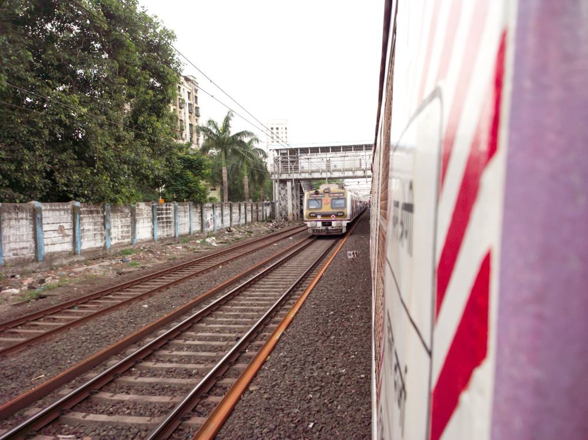
A local train at CSMT in rush hour will rearrange your idea of crowded. Twenty minutes away, Banganga Tank is so quiet you can hear the temple bells across the water.
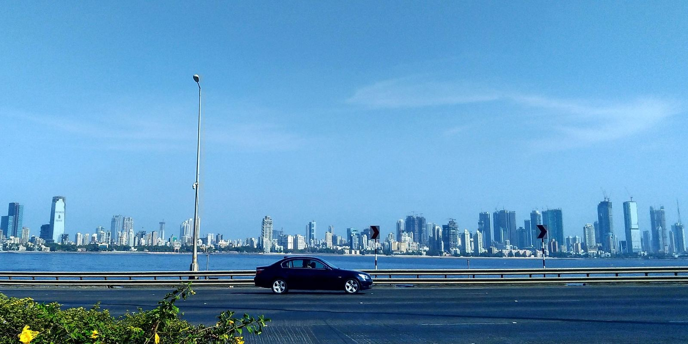
Centuries-old, beautifully preserved wooden Portuguese cottages in Khotachiwadi standing in the shadow of the sprawling financial high-rises of BKC.
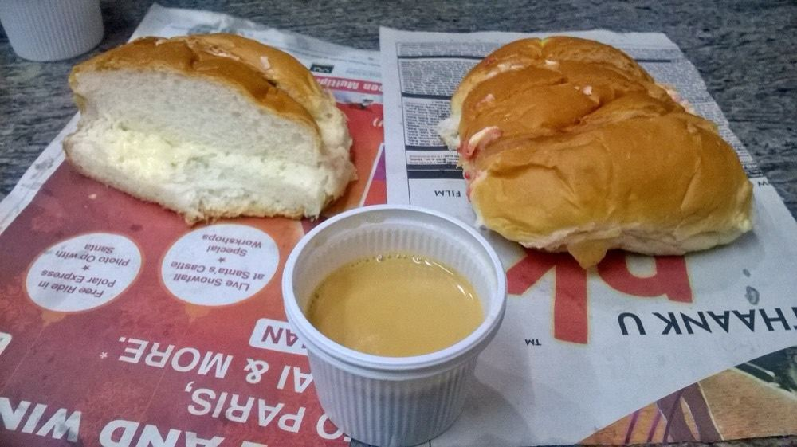
Piping hot, spicy midnight street food at Mohammed Ali Road contrasting with the high-concept speakeasy lounges of Colaba and Bandra.
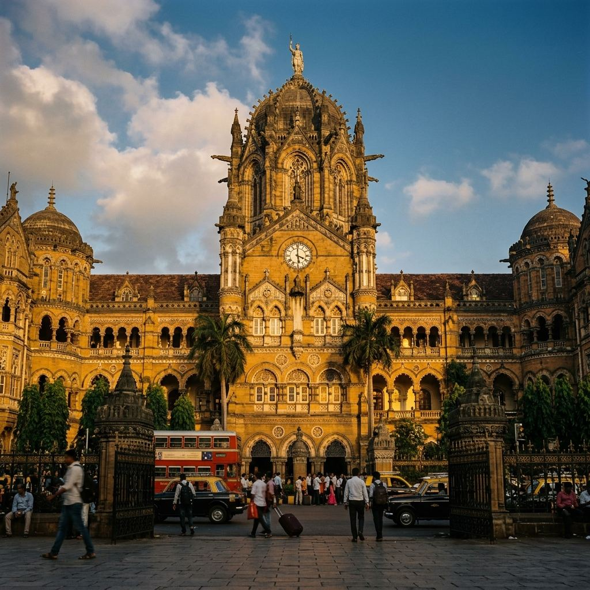
The majestic Victorian stone carvings of Crawford and CSMT standing alongside the raw, salt-crusted maritime history of the Sassoon Docks.

At Crawford Market a wholesaler will sell you a single mango like it's a business deal. Ten minutes up the hill, Malabar's old mansions sit behind banyan trees pretending the city isn't there.

The shimmering Bollywood movie marquees of Bandra existing alongside the ancient spiritual path of Haji Ali Mosque extending into the Arabian Sea.
No haggling, no guesswork. Tell us about your layover and we handle the rest.
Send your arrival and departure times. We work out the real free window you have after immigration and bag-drop.
We pair you with a verified student buddy and a route shaped to your hours — and the things you're actually into.
Meet at arrivals, stash heavy bags in the airport cloakroom, and head out. You're back at BOM with a comfortable buffer.
These aren't fixed packages. They're examples of the kind of day your buddy might build — depending on whether you're a food person, a history person, or just need sea air after fourteen hours in a middle seat.
 The postcardMarine Drive sunset
The postcardMarine Drive sunsetFamous, iconic, cinematic — the classic South Mumbai story everyone shares back home.
 Hyper-localSunday like a local
Hyper-localSunday like a localLocal life, vada pav, sea, old-new contrasts — minus the tourist crowd.
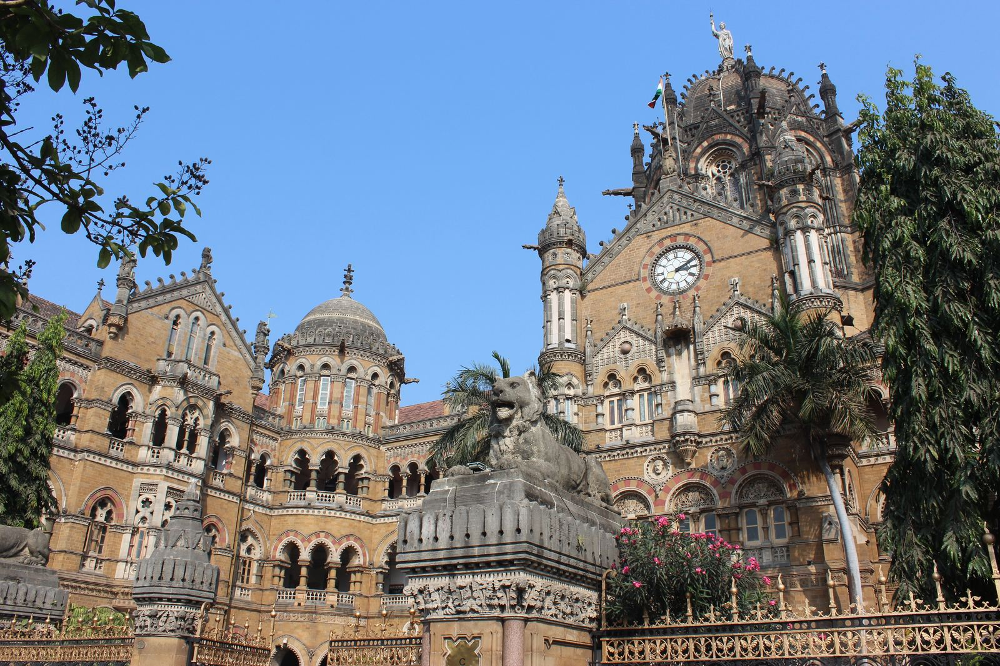
Old BombayIrani cafés & stoneGothic stations, Art Deco facades, berry pulao at Britannia, chai at Kyani.
The streets, plates, and corners a buddy will actually walk you through. As real detours happen, photos from those trips will land here too.

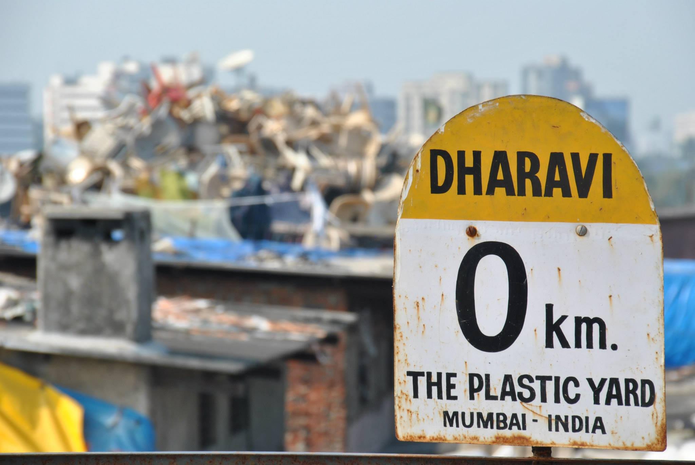
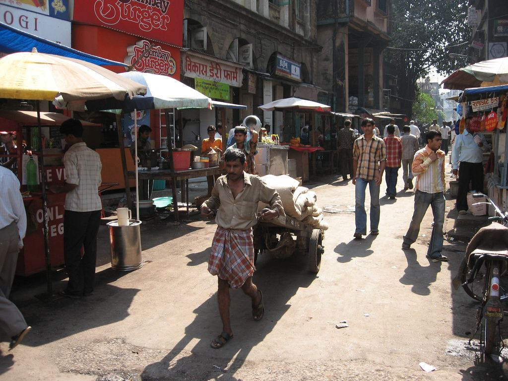
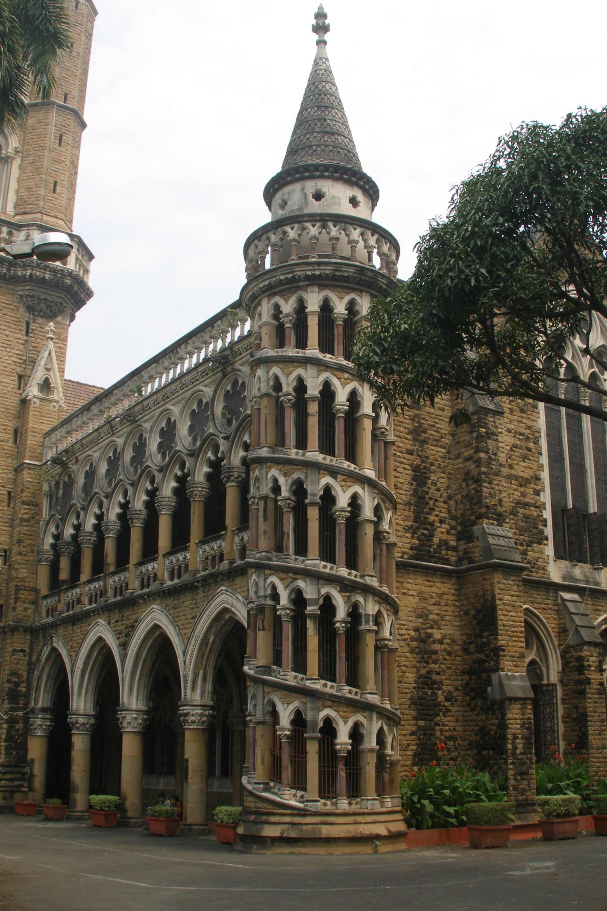
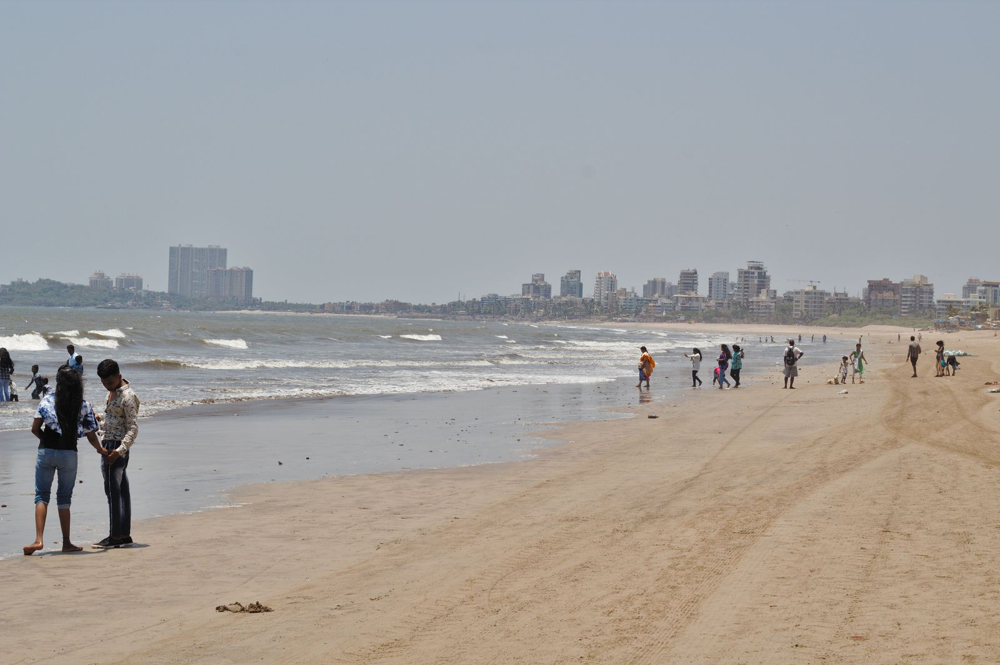
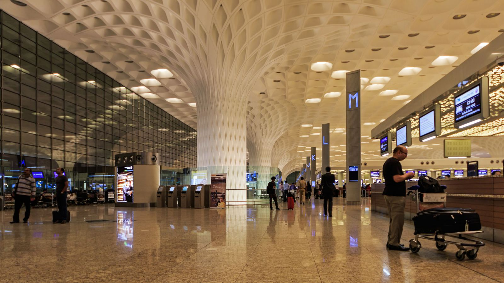
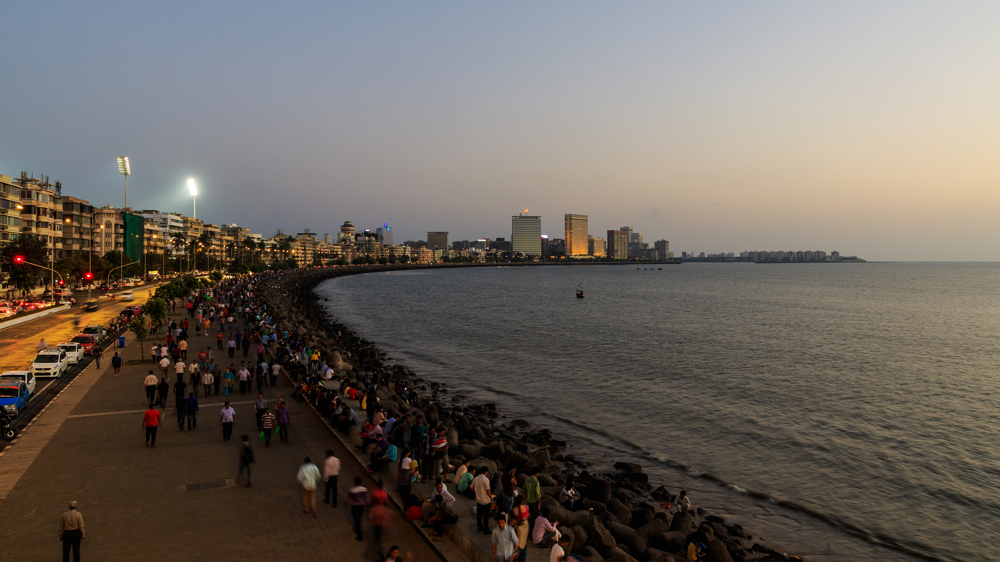


Mumbai is generous, but a few corners need care. We don't sell poverty as spectacle, and we don't cut corners on safety. Here's the line we hold.
Where we visit working neighbourhoods, it's with community-run guides, focused on craft and enterprise — never camera-pointing tours.
Every evening detour ends with a vetted cab. We never put a solo traveller on a late-night local train.
The number you see is the number you pay. No surge, no commission detours, no end-of-day surprise bill.
Prayer times, market days, dress at sacred sites, photography etiquette — your buddy knows, so you never have to guess.
I'm Gaurav. I started Detour because I kept meeting travellers who'd spent twelve hours inside BOM — twenty minutes from one of the most alive cities on earth — because leaving the terminal alone felt too risky.
It isn't, if someone from here walks out with you. So that's the whole product: a student who loves this city, a route built around your flight, and you back at the gate with time to spare.
The first detours are free. Honestly? Because right now we want you to fly home raving about Mumbai more than we want your money. If you have a layover coming up, write to me directly — I read everything: admin@detourtrips.com
Leave your email and we'll send you our one-page layover cheat sheet — visa steps, luggage storage, and how much time you really need.
We're matching our very first travellers right now. Join early access and explore Mumbai with a verified local student, completely free.